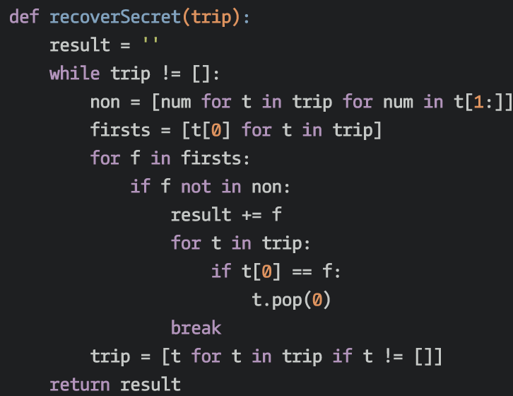

This is for testing

Project Details
These images are screen shots commandeered from codewars.com. I use thse images to help illustrate my ability to use diffrent laguages and solve complex problems with clean well written algorithms.
More Info